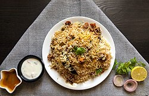

Biryani

Description
Biryani is a mixed rice dish traditionally made with spiced meat, seafood, or vegetables.
Biryani is one of the most popular dishes in South Asia and among the South Asian diaspora.
Biryani is the most-ordered dish on Indian online food ordering and delivery services,
is used in weddings and celebrations throughout the region, and has been described as the most popular dish in India.
Ingredients
- Meat(chicken, mutton, beef)
- Rice
- Fennel seeds
- Ghee
- Nutmeg
- Mace
- Black pepper
- Cloves
- Green cardamom
- Black cardamom
- Cinnamon
- Bay leaves
- Coriander
- Mint
- Ginger
- Onions
- Tomatoes
- Red chillies
- Star anise
- Turmeric
- Cumin
- Milk
- Yoghurt
- Garlic
Steps
- Heat the ghee.
- Add fennel seeds, cumin, bay leaves, cinnamon,
cloves, green cardamom, black cardamom, star
anise, mace, and black pepper.
- Add sliced onions and fry until golden.
- Add ginger and garlic and sauté briefly.
- Add tomatoes and cook until soft.
- Add red chillies, turmeric, and nutmeg and mix well.
- Add yoghurt and cook for a few minutes.
- Add the meat and cook until well coated and partly
cooked.
- Add coriander and mint.
- Add enough water and salt, then cook until the meat
is nearly tender.
- Separately boil the rice until about 70% cooked.
- Drain the rice.
- Spread the rice over the meat.
- Pour milk over the rice.
- Add a little ghee on top.
- Cover the pot tightly.
- Cook on low heat (dum) until the rice and meat are
fully cooked.
- Turn off the heat and let it rest for about
10 minutes.
- Gently mix from the bottom upward and serve.
Home